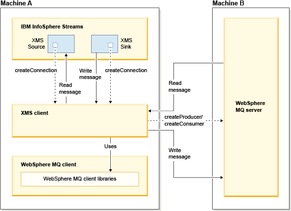

IBMStreams com.ibm.streamsx.messaging Toolkit > com.ibm.streamsx.messaging 2.0.0
General Information
The Messaging toolkit project is an open source IBM InfoSphere Streams toolkit project. It is focused on the development of operators and functions that help you use InfoSphere Streams to interact with messaging systems such as Kafka, JMS, XMS, and MQTT.
The operators provide the ability for InfoSphere Streams applications to send and receive data from a queue or topic that is posted on Kafka, WebSphere MQ, Apache ActiveMQ or MQ Telemetry Transport (MQTT) server.
In particular, the XMSSource and XMSSink operators in the Messaging Toolkit use the standard XMS architecture and APIs to read and write data from WebSphere MQ v7.5 and v8.0.
The JMSource and JMSSink operators use the standard JMS architecture and JMS 1.1 APIs to read and write data from WebSphere MQ v7.5, v8.0 and Apache ActiveMQ v5.7 and up.
The MQTTSource and MQTTSink operators use the MQTT architecture and APIs to read and write to MQTT providers. The operators support IBM MessageSight v1.1 and v1.2.
The KafkaProvider and KafkaConsumer operators supports Kafka v0.8.1.1.
Restriction: The XMSSource and XMSSink, operators in the Messaging Toolkit are not supported on POWER7 or POWER 8 Systems. You must use x86_64 systems.
Restriction: The XMSSource and XMSSink, operators in the Messaging Toolkit are not supported on RHEL 7 platforms.
The following figure shows how the XMSSink and XMSSource operators in the Messaging Toolkit use standard XMS architecture and APIs.

- The CreateProducer API creates a message producer to send messages to the specified destination.
- The CreateConsumer API creates a message consumer for the specified destination.
- The CreateConnection API creates a connection that uses a specified user identity. The specified user identifier and password are used to authenticate the application.
The following figure shows how the JMSSource and JMSSink operators in the Messaging Toolkit use standard JMS architecture and APIs. 
The Messaging Toolkit operators (JMS, XMS and MQTT) must be configured to connect to messaging systems. This configuration information is specified in an XML document, called a connection specifications document. The connection specifications document is similar to but separate from the document that is used by the Database Toolkit.
- Developing and running applications that use the Messaging Toolkit
- To create applications that use the Messaging Toolkit, you must configure either Streams Studio or the SPL compiler to be aware of the location of the toolkit.
- Connection specifications document
- A connection specifications document is an XML document that describes how operators in the Messaging Toolkit connect to and access messaging systems.
- Version
- 2.0.0
- Required Product Version
- 4.0.0.0
- Author
- IBMStreams Open Source Community at GitHub - https://github.com/IBMStreams/streamsx.messaging
Namespaces
- com.ibm.streamsx.messaging.jms
- Conversions between JMS messages and tuples in IBM InfoSphere Streams When you send data to or receive data from WebSphere MQ or an Apache Active MQ queue or topic by using JMSSink or JMSSource operators, IBM InfoSphere Streams must convert tuples to JMS messages, or vice-versa.
- com.ibm.streamsx.messaging.kafka
- Operators
- com.ibm.streamsx.messaging.mqtt
- Operator control input port Some of the operators in the Messaging Toolkit provide the capability to specify an optional control input port.
- Operators
- com.ibm.streamsx.messaging.xms
- Conversions between XMS messages and tuples in IBM InfoSphere Streams When you send data to or receive messages from a WebSphere MQ queue or topic by using XMSSink or XMSSource operators, IBM InfoSphere Streams must convert the XMS message to a tuple, or vice versa.